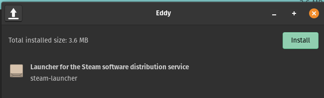
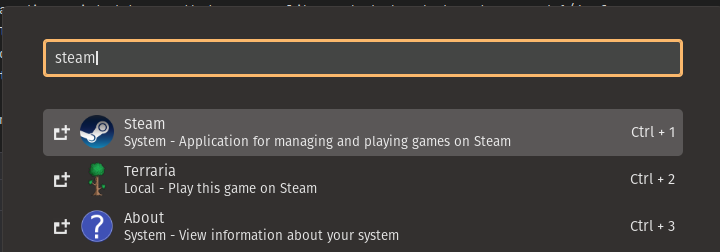
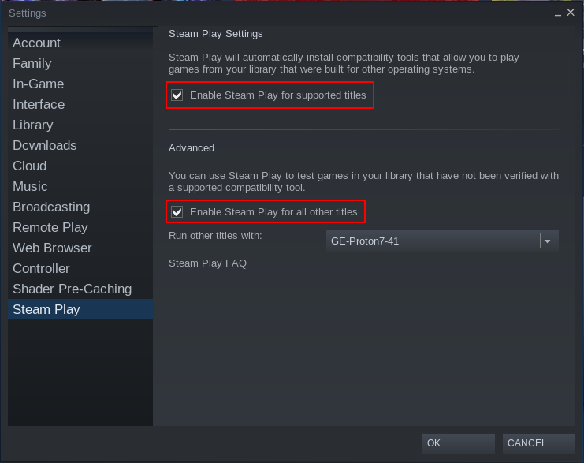
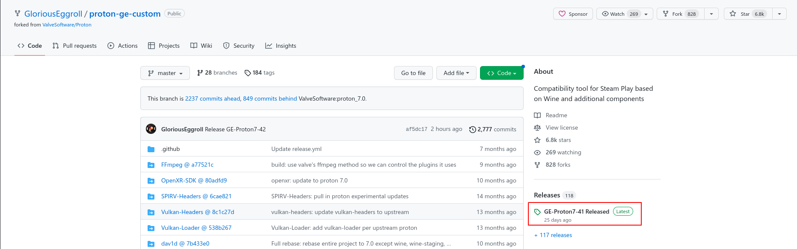
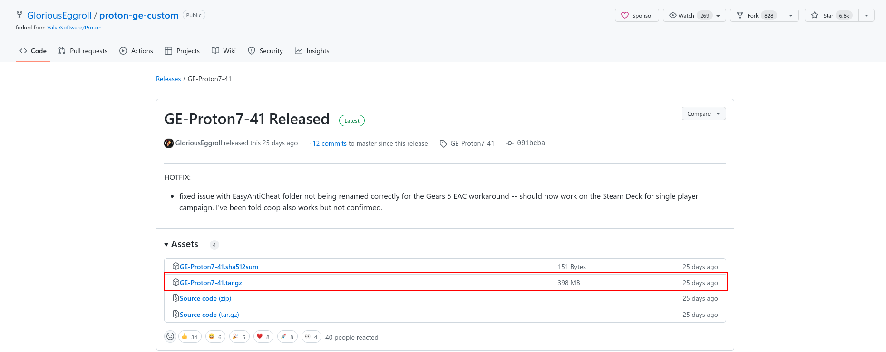
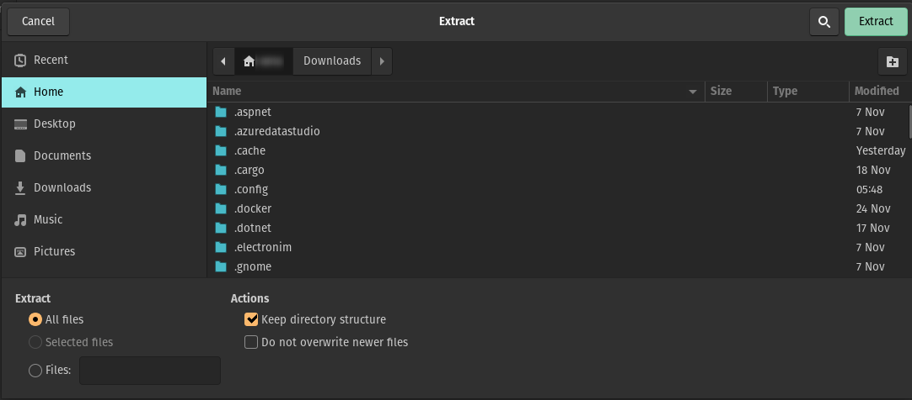
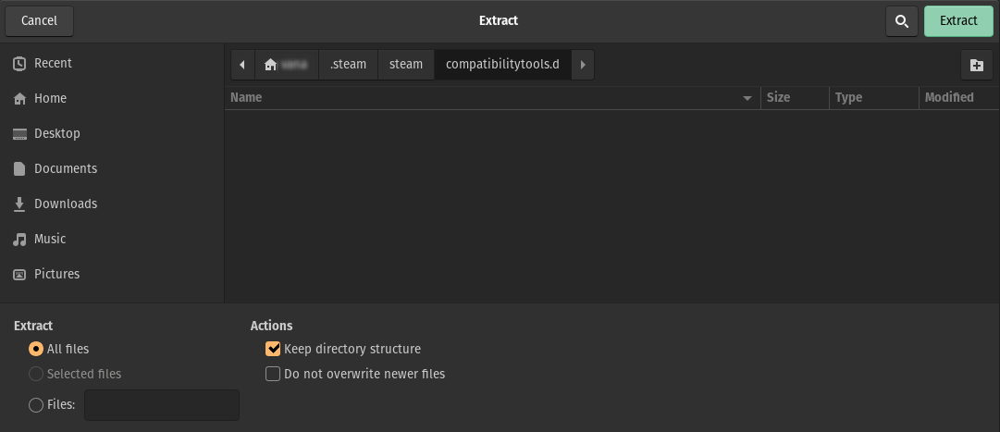
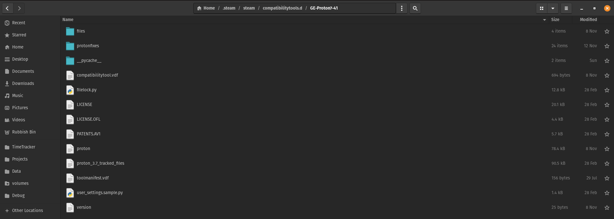
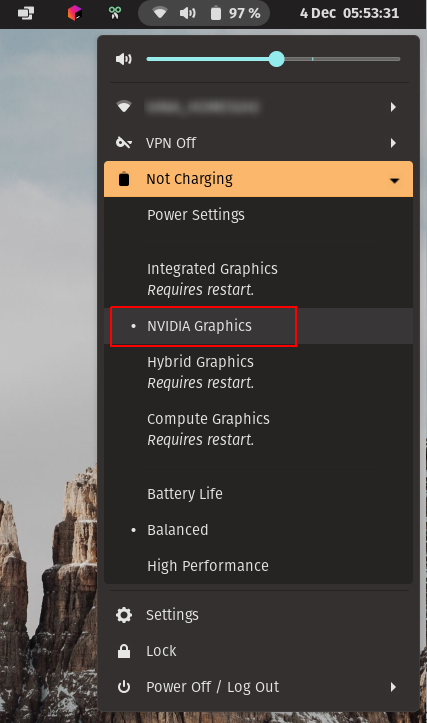

Gaming on Pop_OS! with Steam
If you love PC gaming, I'm going to guess that you game using Steam for your gaming fix. Fortunately, Steam runs really well on Linux. With a few tricks you should be able to play almost all your games in your Steam library.
Introduction¶
Skill level required: Intermediate
Here I'm going to assume that you've installed POP!_OS. If you haven't followed the guide for installing POP!_OS on their website https://support.system76.com/articles/install-pop.
The only things I would change in the guide is:
- Using Ventoy for the boot media rather than Etcher. Mostly, because I use Ventoy for trying out multiple distros from a single flash drive, so it's already available as an installation media.
- If you're creating a gaming pc/laptop you might not want your hard drive encrypted as this will slow down your game loading times a little. So when you get to the Drive Encryption section in the installer select the Don't Encrypt option.
Once you have POP!_OS installed, we'll have a look at installing Steam and getting your game library running.
Installing Steam¶
Now that you have a freshly installed machine, don't install Steam using the Pop!_Shop as this will install the Steam flatpak which didn't let me easily store my games on another disk. Visit Steam's website https://store.steampowered.com and click on the Install Steam button. You should get a steam_latest.deb file in your Downloads folder. You can think of a .deb file as a .exe or .msi installer file for Pop!_OS (any distro derived from Debian actually). Double-click on the steam_latest.deb file, and it will open in Eddy (the Pop!_OS .deb installer tool). Simply click on the Install button, and it will start the installation for Steam.

Enabling Steam Play¶
Now that I had Steam installed, you can just launch Steam using the application launcher (by pressing the Windows Key).

On my first launch of Steam, I was disappointed to see that my game library had shrunk down to around ¼ of titles that were available on Windows. After some googling I discovered that you need to enable something called "Steam Play" for your games to run on Linux. Fortunately, this was a simple thing to fix.
Open Steam >> Settings >> Steam Play
Now, you want to tick two options Enable Steam Play for supported titles and Enable Steam Play for all other titles

Once you click on OK, you'll be prompted to restart Steam.
Installing Proton Glorious Eggroll¶
Now, I could see my entire game library in Steam on Linux. Like, many other people, the first thing I did was launch Skyrim and I soon discovered that I had no sound in the game and had some other weird glitches.
There is one more piece of the puzzle that you need to be able to play 99% of your library and that is Proton Glorious Eggroll (Proton GE for short). This tool is a heavily tweaked version of Proton which Steam uses for Steam Play. To download it, navigate to https://github.com/GloriousEggroll/proton-ge-custom
Grab the latest release of Proton GE

Download the latest binaries (not the source code)

Double-click on the GE-Proton7-41.tar.gz file in your Downloads folder. Click on the Extract button in the top left.
Select your Home folder

Now what no one tells you is that you need to press Ctrl+H to show hidden folders (any folder or file with a dot in-front of the name is a hidden folder). Then select .steam >> steam. Now create a new folder called compatibilitytools.d. You can add additional folders by "Create Folder" icon just below the Extract button.
Your screen should look as follows when you are ready to extract Proton GE by clicking on the Extract button.

If you open your file manager and navigate to your new GE-Proton7-41 folder and your screen looks as follows, you are on the right track

Next, restart Steam and open the properties of any game. Select the Compatibility tab. Tick the Force the use of a specific Steam Play compatibility tool. Then select GE-Proton7-41. Launch your game and if you are lucky, 99% of the time the game will launch and play without issues.
Tips¶
- If you are using a gaming laptop, most gaming laptops have hybrid graphics. For the best gaming experience you going to want to select the dedicated graphics card option in your power settings. 
- If you are struggling to get a game to work, have a look at ProtonDB https://www.protondb.com and see if other's have managed to play the game on Linux and what tweaks were needed to play the game.
Q/A¶
- Why didn't you just use the flatpak for Steam in the Pop!_Shop? Working with Steam games that you want to have installed on another drive is much harder and requires creating linked folders etc.
- Why are my games not working when I'm sharing a common game library with Windows on another drive? Steam Play does not work correctly with ntfs formatted drives.
- My game is immediately crashing on launch? Same as above, have a look at ProtonDB and see what others needed to do to get the game working.
- Do you know that you could have completed your whole guide by using 4 lines of bash script? Yes, I am aware of this but this post is intended to teach rather than just get to the end goal.
- Why are you calling the OS Linux don't you know that Linux is just a kernel, and it's actually GNU/Linux? I am aware of that.